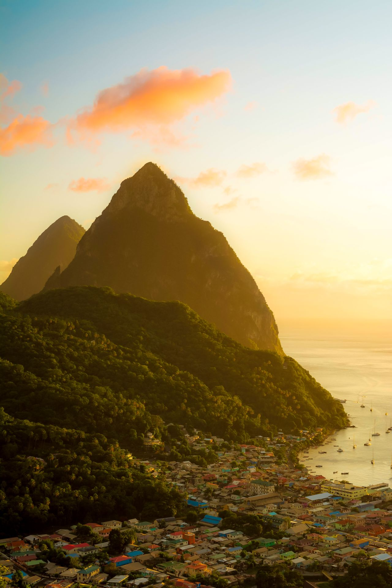

Cliff's HTML Journey
The journey of one thousand miles begins with the first step

Saint Lucia
Top 10 places to visit in Saint Lucia
- The Pitons
- Marigot Bay
- Anse Chastanet Marine National Park
- Tet Paul Nature Trail
- Soufrière
- Morne Coubaril Historical Adventure Park
- Mount Soufriere
- Soufrière Estate
- Pigeon Island National Park
- Rodney Bay